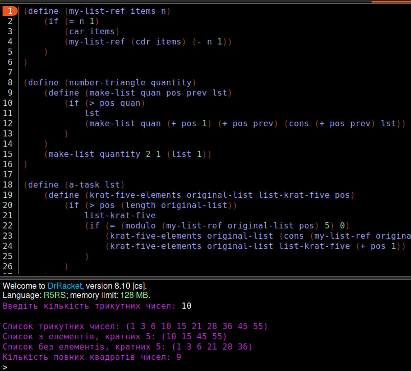
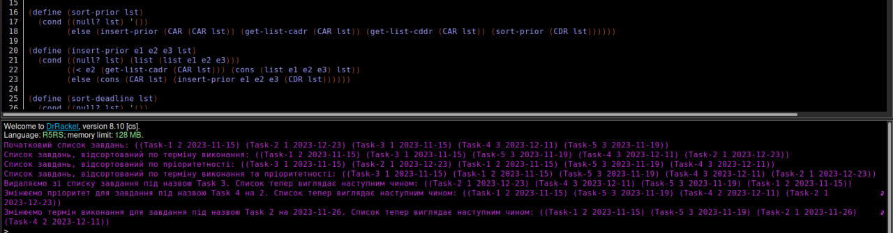

Лабораторна робота 4
Мета роботи
Опанувати теоретичні основи використання списків функціональними мовами та розробити програми обробки списків
Вибір мови програмування та IDE
Для виконання даної лабораторної роботи було використано мову функціонального програмування Scheme та IDE DrRacket. Мова Scheme надає великий набір числових типів і операцій з ними, має неявні типи даних та статичну область видимості. DrRacket дозволяє програмувати на великій кількості мов функціонального програмування та має зручний інтерфейс.
Завдання 1
Умова завдання
Створити список трикутних чисел, задавши їх кількість. Трикутні числа складають послідовність 1, 3, 6, 10, 15, 21, 28, 36, 45, …. Формула для обчислення трикутного числа: t1 = 1; tn = n + tn−1. Вивести створений список. Виконати такі операції: a) Створити підсписок з елементів, кратних 5; b) Видалити із списку усі елементи, що є кратні 5; c) Перевірити, чи дорівнює сума двох послідовних трикутних чисел повному квадрату числа. Підрахувати кількість повних квадратів чисел, що утворює список
Код програми:
(define (my-list-ref items n)
(if (= n 1)
(car items)
(my-list-ref (cdr items) (- n 1))
)
)
(define (number-triangle quantity)
(define (make-list quan pos prev lst)
(if (> pos quan)
lst
(make-list quan (+ pos 1) (+ pos prev) (cons (+ pos prev) lst))
)
)
(make-list quantity 2 1 (list 1))
)
(define (a-task lst)
(define (krat-five-elements original-list list-krat-five pos)
(if (> pos (length original-list))
list-krat-five
(if (= (modulo (my-list-ref original-list pos) 5) 0)
(krat-five-elements original-list (cons (my-list-ref original-list pos) list-krat-five) (+ pos 1))
(krat-five-elements original-list list-krat-five (+ pos 1))
)
)
)
(krat-five-elements lst '() 1)
)
(define (b-task lst)
(define (delete-krat-five original-list list-wo-krat-five pos)
(if (> pos (length original-list))
list-wo-krat-five
(if (= (modulo (my-list-ref original-list pos) 5) 0)
(delete-krat-five original-list list-wo-krat-five (+ pos 1))
(delete-krat-five original-list (cons (my-list-ref original-list pos) list-wo-krat-five) (+ pos 1))
)
)
)
(delete-krat-five lst '() 1)
)
(define (c-task lst)
(define (quantity-povn-kvad list-trig-num quan pos)
(if (> pos (length list-trig-num))
quan
(if (= (+ (my-list-ref list-trig-num pos) (my-list-ref list-trig-num (- pos 1))) (expt pos 2))
(quantity-povn-kvad lst (+ quan 1) (+ pos 1))
(quantity-povn-kvad lst quan (+ pos 1))
)
)
)
(quantity-povn-kvad lst 0 2)
)
(display "Введіть кількість трикутних чисел: ")
(define quant (read))
(newline)
(display "Список трикутних чисел: ")
(define triangle (reverse (number-triangle quant)))
(display triangle)
(newline)
(display "Список з елементів, кратних 5: ")
(define a-answear (reverse (a-task triangle)))
(display a-answear)
(newline)
(display "Список без елементів, кратних 5: ")
(define b-answear (reverse (b-task triangle)))
(display b-answear)
(newline)
(display "Кількість повних квадратів чисел: ")
(define c-answear (c-task triangle))
(display c-answear)
(newline)
Результат роботи програми
Достовірність результату:
Завдання 2
Умова завдання
Написати код, що моделює процес управління списком справ на період (день, тиждень, місяць тощо) – сценарій Dropbox Paper, Google Tasks. Нехай існує перелік завдань, яким задані пріоритети та Deadlines. Потрібно утворити список першочергових справ враховуючи пріоритети та терміни виконання. Задачі можуть бути розбиті на підзадачі, які утворюють підсписки. Відсортувати список за термінами виконання та за пріоритетами. Продемонструвати сценарій виконання завдань, вибираючи їх зі списку, вилучаючи зі списку завдання, які вже виконані, пересуваючи завдання у списку відповідно до зміни пріоритету або терміну виконання.
Код програми:
(define (get-list-cadr x)
(car (cdr x))
)
(define (get-list-cddr x)
(car (cdr (cdr x)))
)
(define (my-list-ref items n)
(if (= n 1)
(car items)
(my-list-ref (cdr items) (- n 1))
)
)
(define (sort-prior lst)
(cond ((null? lst) '())
(else (insert-prior (CAR (CAR lst)) (get-list-cadr (CAR lst)) (get-list-cddr (CAR lst)) (sort-prior (CDR lst))))))
(define (insert-prior e1 e2 e3 lst)
(cond ((null? lst) (list (list e1 e2 e3)))
((< e2 (get-list-cadr (CAR lst))) (cons (list e1 e2 e3) lst))
(else (cons (CAR lst) (insert-prior e1 e2 e3 (CDR lst))))))
(define (sort-deadline lst)
(cond ((null? lst) '())
(else (insert-deadline (CAR (CAR lst)) (get-list-cadr (CAR lst)) (get-list-cddr (CAR lst)) (sort-deadline (CDR lst))))))
(define (insert-deadline e1 e2 e3 lst)
(cond ((null? lst) (list (list e1 e2 e3)))
((string<=? e3 (get-list-cddr (CAR lst))) (cons (list e1 e2 e3) lst))
(else (cons (CAR lst) (insert-deadline e1 e2 e3 (CDR lst))))))
(define (sort-list lst)
(if (<= (length lst) 1)
lst
(let* ((pivot (list-ref lst (quotient (length lst) 2)))
(left '())
(middle '())
(right '()))
(for-each
(lambda (element)
(cond
((or (string pos (length original-list))
new-lst
(if (string=? (CAR (my-list-ref original-list pos)) element)
(delete-searched-elem original-list element new-lst (+ pos 1))
(delete-searched-elem original-list element (cons (my-list-ref original-list pos) new-lst) (+ pos 1))
)
)
)
(delete-searched-elem lst elem '() 1)
)
(define (change-prior lst elem new-prior)
(define (set-new-prior original-list element prior new-lst pos)
(if (> pos (length original-list))
new-lst
(if (string=? (CAR (my-list-ref original-list pos)) element)
(set-new-prior original-list element prior (cons (list (CAR (my-list-ref original-list pos)) new-prior (get-list-cddr (my-list-ref original-list pos))) new-lst) (+ pos 1))
(set-new-prior original-list element prior (cons (my-list-ref original-list pos) new-lst) (+ pos 1))
)
)
)
(set-new-prior lst elem new-prior '() 1)
)
(define (change-deadline lst elem new-deadline)
(define (set-new-deadline original-list element deadline new-lst pos)
(if (> pos (length original-list))
new-lst
(if (string=? (CAR (my-list-ref original-list pos)) element)
(set-new-deadline original-list element deadline (cons (list (CAR (my-list-ref original-list pos)) (get-list-cadr (my-list-ref original-list pos)) new-deadline) new-lst) (+ pos 1))
(set-new-deadline original-list element deadline (cons (my-list-ref original-list pos) new-lst) (+ pos 1))
)
)
)
(set-new-deadline lst elem new-deadline '() 1)
)
(define (list-set! list k val)
(if (zero? k)
(set-car! list val)
(list-set! (cdr list) (- k 1) val)))
(define orig-list (list
(list "Task 1" 2 "2023-11-15")
(list "Task 2" 1 "2023-12-23")
(list "Task 3" 1 "2023-11-15")
(list "Task 4" 3 "2023-12-11")
(list "Task 5" 3 "2023-11-19")))
(define lst-deadline (sort-deadline orig-list))
(define lst-prior (sort-prior orig-list))
(define lst-prior-deadline (sort-list orig-list))
(display "Початковий список завдань: ")
(display orig-list)
(newline)
(display "Список завдань, відсортований по терміну виконання: ")
(display lst-deadline)
(newline)
(display "Список завдань, відсортований по пріоритетності: ")
(display lst-prior)
(newline)
(display "Список завдань, відсортований по терміну виконання та пріоритетності: ")
(display lst-prior-deadline)
(newline)
(display "Видаляємо зі списку завдання під назвою Task 3. Список тепер виглядає наступним чином: ")
(set! lst-prior-deadline (remove-lst-elem lst-prior-deadline "Task 3"))
(display lst-prior-deadline)
(newline)
(display "Змінюємо пріоритет для завдання під назвою Task 4 на 2. Список тепер виглядає наступним чином: ")
(set! lst-prior-deadline (change-prior lst-prior-deadline "Task 4" 2))
(set! lst-prior-deadline (sort-list lst-prior-deadline))
(display lst-prior-deadline)
(newline)
(display "Змінюємо термін виконання для завдання під назвою Task 2 на 2023-11-26. Список тепер виглядає наступним чином: ")
(set! lst-prior-deadline (change-deadline lst-prior-deadline "Task 2" "2023-11-26"))
(set! lst-prior-deadline (sort-list lst-prior-deadline))
(display lst-prior-deadline)
(newline)
Результат роботи програми
Достовірність результату:
Висновок
В ході виконання даної лабораторної роботи було створено список трикутних чисел та списки з різних елементів першочегового, також було написано програму, яка моделює процес управління списком справ на період. В результаті всі написані функції виконувалися без помилок та видавали правильний результат.